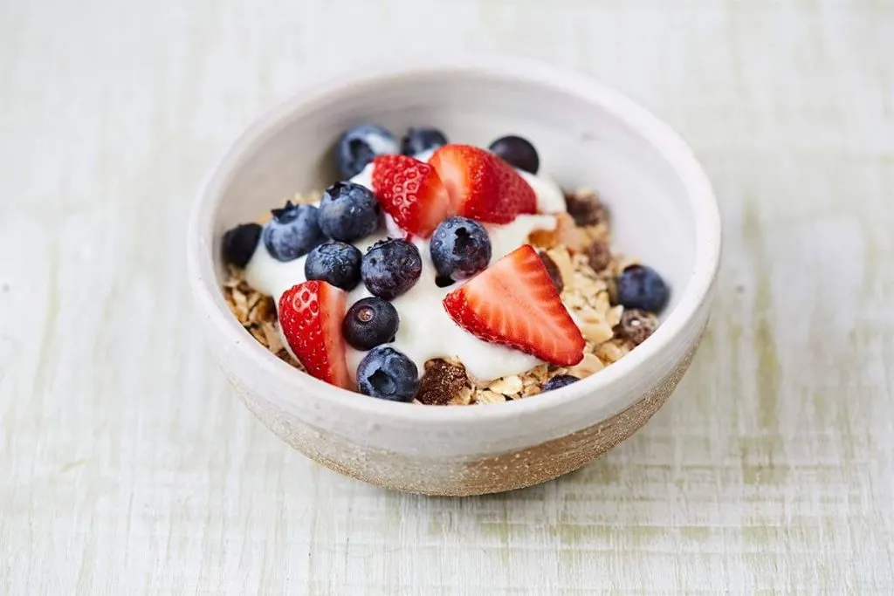

Cereal

Cereal is incredible, you can mix and match all sorts of ingredients,
bringing them all together with milk to create an amalgam of your own creation.
Ingredients
Optional
Steps
- Get a bowl
- Pour your cereal of choice. (important)
- Pour the milk of your choosing into the bowl.
- Sprinkle any extras you feel like on top.
- Depending on your cereal, eat immediately to avoid sogginess, or allow a few
minutes for the milk to soak in. You do you.
- Slurp it up.